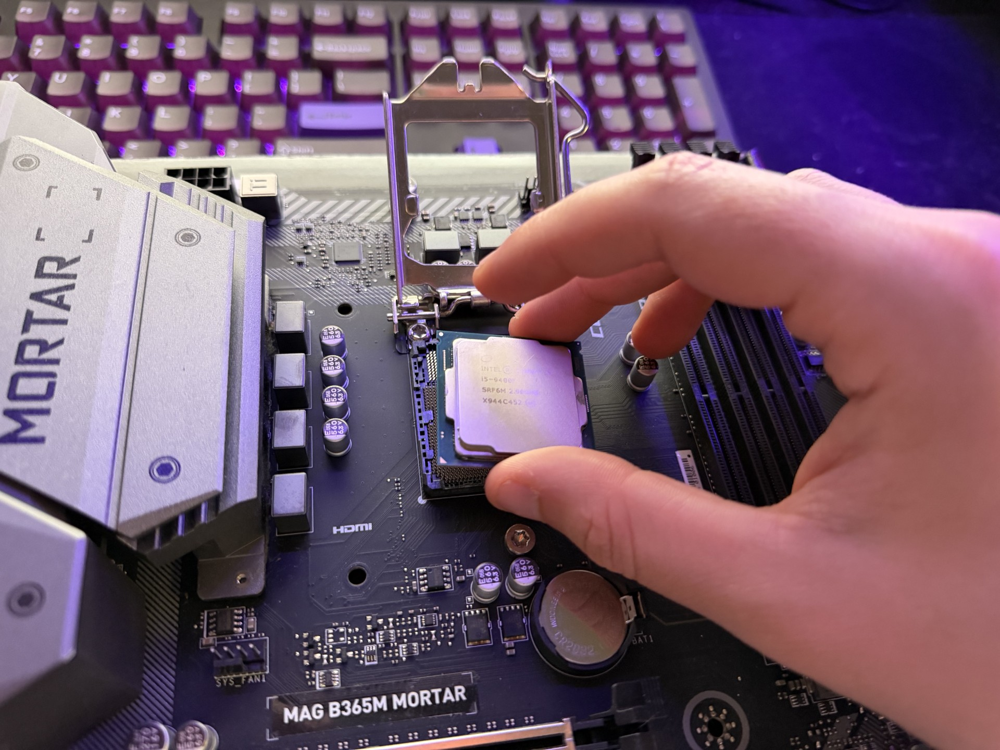
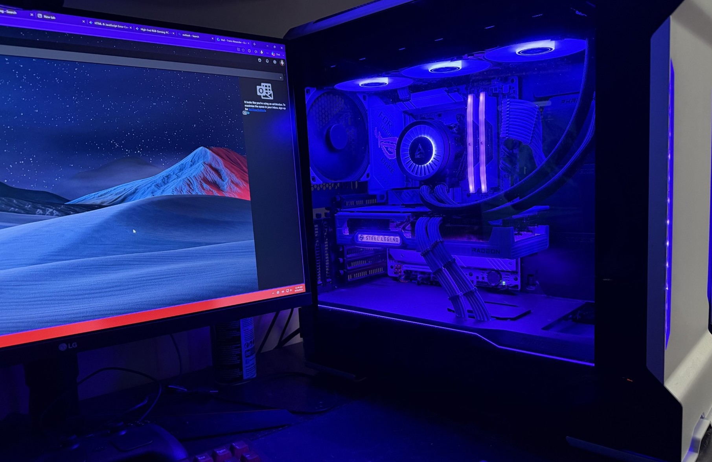

What is PC Gaming?
PC Gaming is the hobby of playing video games on a personal computer rather than a dedicated console. It is characterized by deep hardware customization, a massive library of both indie and AAA titles, and pushing the boundaries of graphical fidelity.
From building liquid-cooled custom builds glowing with RGB lights to modifying game files to create entirely new experiences, PC gaming is as much about the hardware and software ecosystem as it is about playing.

AI Prompt used: "Photorealistic image of a high-end custom gaming PC tower with a glass side panel, glowing with neon pink and cyan RGB lighting, sitting on a dark desk, 8k resolution"
Who are PC Gamers?
The community ranges from casual players enjoying cozy indie games on laptops to hardcore hardware enthusiasts chasing extreme performance.
- eSports Competitor: Needs 240Hz+ monitors and ultra-low latency mice for competitive games.
- Hardware Enthusiast: Treats building and overclocking the PC as the actual game.
- Modders: Rewrites game code to add new textures, features, or completely overhaul gameplay.

AI Prompt used: "Photorealistic portrait of a gamer wearing an illuminated headset in a dark room, face lit up by the glow of a dual-monitor setup"
When to Upgrade or Buy?
The PC hardware market is cyclical. Knowing when to buy your components or your games can save you hundreds of dollars.
| Season | Hardware Cycles | Software Sales |
|---|---|---|
| Summer | Usually quiet, occasional mid-tier GPU drops | The massive Steam Summer Sale (June/July) |
| Fall | Next-gen CPUs and GPUs are traditionally announced | Black Friday / Cyber Monday deals on hardware |
| Winter | New hardware hits the shelves | Steam Winter Sale |

AI Prompt used: "Photorealistic macro shot of a mechanical RGB keyboard with a glowing neon holographic calendar hovering above it, dark cyberpunk aesthetic"
Where to Get Your Games
Unlike consoles, the PC is an open platform. You aren't locked into a single digital storefront, allowing for competitive pricing and massive free libraries.
- Steam: The undisputed king. Offers the largest library, user reviews, and community workshops for mods.
- Epic Games Store: Known for exclusive titles and giving away games for free every week.
- GOG (Good Old Games): The best place for DRM-free gaming and perfectly optimized classic titles.
Where to Find Parts
When it comes to purchasing PC components, there are several reputable retailers and online marketplaces to consider.
- Newegg: A well-known online retailer for PC components and accessories.
- Micro Center: A popular brick-and-mortar retailer for PC components and accessories, with one located in Charlotte, North Carolina.
- Amazon: A major online retailer that carries a wide selection of PC components and accessories.

AI Prompt used: "Photorealistic render of a futuristic digital storefront interface showing glowing video game covers floating in a dark cyberpunk space"
How to Build Your First PC
Building a PC is often described as "LEGOs for adults." Youtube is a great resource for learning the basics and getting a general idea of the process. If you are worried about the complexity, you can always start with a pre-built system or seek help from the community.
Sites like PCPartPicker can help you find the best deals on components and help you build a custom rig that fits your budget and performance needs. They also have community recommended builds you can use as a starting point.

Picture of me installing a CPU into a motherboard
Why Choose PC?
PC gaming offers total freedom. You can play with a mouse and keyboard, an Xbox controller, or a steering wheel. You control the graphical settings, and your game library carries forward with you forever without needing "remasters."
"The PC is the only platform that allows you to start as a player, become a modder, and eventually evolve into a game developer, all on the exact same machine."

Picture of my custom built PC
AI Usage & Prompts
Disclosure regarding the use of Artificial Intelligence on this project.
- The HTML, CSS structure, and body text were written by Me with assistance from Gemini to help double-check my work.
- Some of the images were generated using AI, others are photos taken by me.
- The exact prompts used to generate each image are documented in the captions of the figures.
AI Prompt used: "Photorealistic image of a high-end custom gaming PC tower with a glass side panel, glowing with neon pink and cyan RGB lighting, sitting on a dark desk, 8k resolution"
AI Prompt used: "Photorealistic portrait of a gamer wearing an illuminated headset in a dark room, face lit up by the glow of a dual-monitor setup"
AI Prompt used: "Photorealistic macro shot of a mechanical RGB keyboard with a glowing neon holographic calendar hovering above it, dark cyberpunk aesthetic"
AI Prompt used: "Photorealistic render of a futuristic digital storefront interface showing glowing video game covers floating in a dark cyberpunk space"